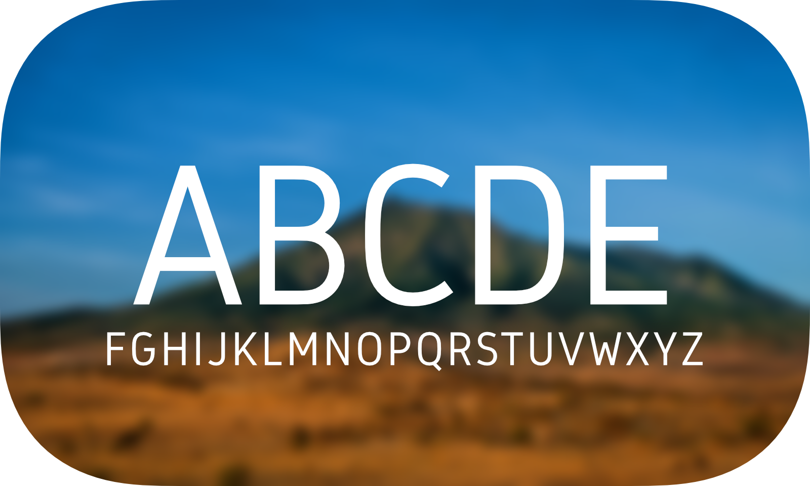
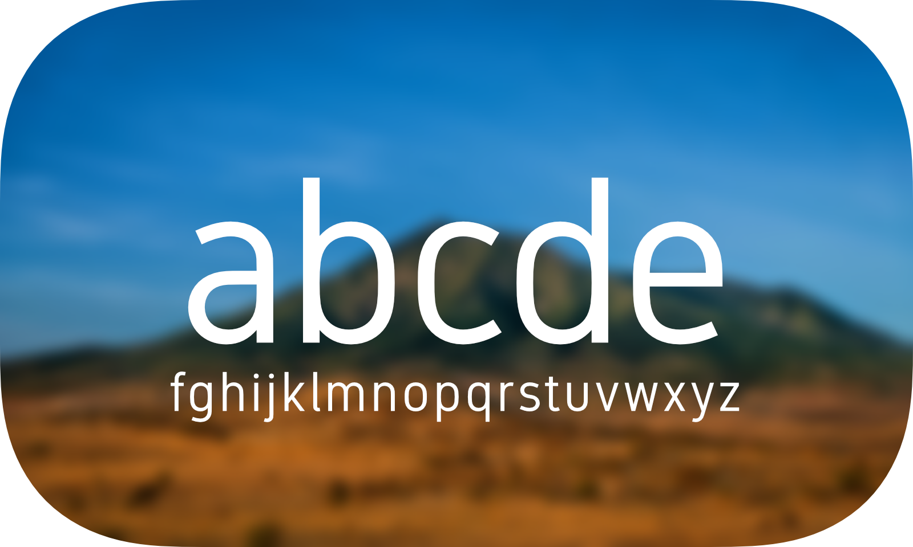
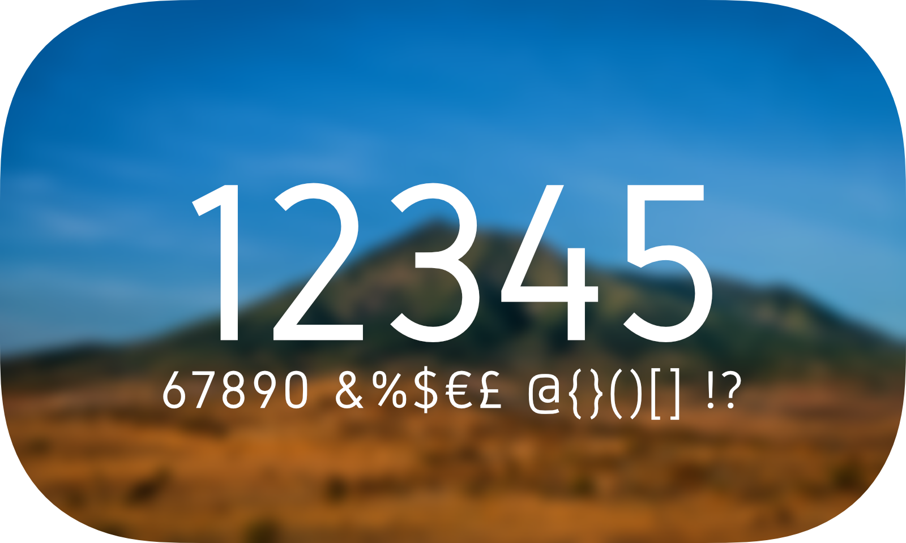

Gidole is a small, beautiful mountain town in southern Ethiopia where the font’s author grew up. The font, his first, is a humanist and minimal variation of the original DIN 1451 design.
The author wishes that you thank him for the design by donating to the Ethiopian Red Cross Society.
To contribute, see https://github.com/googlefonts/gidole.


